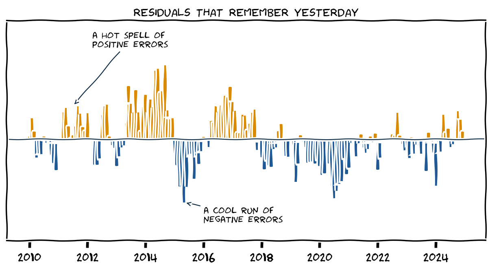
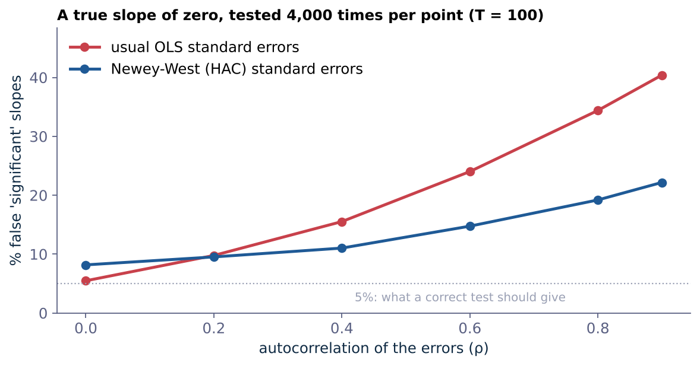

Residuals That Remember Yesterday: Autocorrelation
If today is hotter than usual, tomorrow probably will be too. Heat waves last for days; cold spells too. Moods carry over from one morning to the next. Prices that rose last month often keep rising this month. Time has memory.
When that memory sneaks into the errors of a regression, we have autocorrelation, also called serial correlation. It doesn't make the coefficients wrong, but it makes the regression far too confident about them. This chapter shows how to spot it, test it and fix it, with an electricity company that badly needs to know how much a hot month costs it.
Part II · Foundations · Chapter 6 of 9
1. Omitted variables · 2. Spurious regression · 3. R-squared · 4. Measurement error · 5. Heteroskedasticity · 6. Autocorrelation · 7. Dummy variables · 8. Structural breaks · 9. Multicollinearity
Data: blog_datasets.xlsx, sheet P5B_autocorr · Simulated monthly data, 2010M01–2024M12, 180 observations · EViews program
The number every EViews user has seen
Every EViews regression table prints a Durbin-Watson stat in its bottom right corner. Most students learn to glance at it, hope it is near 2, and move on. It was invented by two statisticians who worked together at Cambridge's Department of Applied Economics in the late 1940s: James Durbin, an Englishman who later spent most of his career at the London School of Economics, and Geoffrey Watson, an Australian who went on to Princeton. Their papers appeared in Biometrika in 1950 and 1951, and their statistic has been printed under countless regressions ever since.
The idea, and the model
In a time-series regression
we normally assume the errors \(u_t\) are unrelated to each other. Autocorrelation means they are not. The simplest version is first-order autocorrelation, AR(1):
where \(\varepsilon_t\) is fresh, unpredictable noise. With \(\rho > 0\) (by far the most common case in economics), a positive error tends to be followed by another positive error. The residuals come in runs:

Where does it come from?
- Inertia. Economies, weather, habits and prices move slowly. Anything left in the error inherits that slowness.
- Omitted variables that move slowly (Does Ice Cream Drown People?). If a missing variable trends or cycles, the errors trend and cycle with it.
- Wrong functional form. Fitting a straight line to a curve leaves residuals that are positive at the ends and negative in the middle: one long run each.
- Data smoothing. Quarterly averages of monthly data, or interpolated series, build autocorrelation in by construction.
The second and third causes matter: autocorrelated residuals are often the model telling you something is missing. Always ask that question first.
What goes wrong (and what doesn't)
The coefficients are still unbiased: on average, OLS gets the slope right. But the usual standard errors are wrong. When both the errors and the regressor are positively autocorrelated, as they usually are, the standard errors are too small, so t-statistics are too big and you find "significant" effects that aren't there.
Why the standard errors are too small (click to open)
With one regressor (in deviations from its mean), \(\hat\beta_1 - \beta_1 = \sum x_t u_t / \sum x_t^2\). Its variance is
The usual OLS formula keeps only the first term, \(\sigma_u^2/\sum x_t^2\), and throws away all the covariance terms. If \(x\) is itself AR(1) with coefficient \(\phi\), a classic approximation gives
With \(\rho = 0.8\) and \(\phi = 0.8\), that ratio is \(1.64/0.36 \approx 4.6\). The OLS standard error is too small by a factor of about \(\sqrt{4.6} \approx 2.1\).
I tested this by simulation. The true slope is zero; the regressor has autocorrelation 0.8; I varied the autocorrelation of the errors:

With independent errors, the usual t-test wrongly finds a "significant" slope 5% of the time, as it should. With \(\rho = 0.8\), it does so 34% of the time; with \(\rho = 0.9\), 40%. One test in three is a false discovery.
The data: electricity and temperature
An electricity distribution company wants to know how much extra power each degree of temperature costs it, to plan for summer peaks. The sheet P5B_autocorr has 15 years of monthly data:
- DEMAND: electricity demand (GWh)
- TEMP: average maximum temperature (°C)
I built the data with a true effect of 3.0 GWh per °C, and errors with \(\rho = 0.75\): a hot, humid spell or a run of festivals pushes demand above normal for several months.
ls demand c temp
Dependent Variable: DEMAND
Method: Least Squares
Date: 10/27/26 Time: 21:45
Sample: 2010M01 2024M12
Included observations: 180
==============================================================================
Variable Coefficient Std. Error t-Statistic Prob.
==============================================================================
C 37.22683 3.436270 10.83350 0.0000
TEMP 3.115478 0.121924 25.55268 0.0000
==============================================================================
R-squared 0.785785 Mean dependent var 124.5294
Adjusted R-squared 0.784581 S.D. dependent var 10.61980
S.E. of regression 4.928994 Akaike info criterion 6.039196
Sum squared resid 4324.507 Schwarz criterion 6.074673
Log likelihood -541.5276 Hannan-Quinn criter. 6.053580
F-statistic 652.9393 Durbin-Watson stat 0.436875
Prob(F-statistic) 0.000000
==============================================================================
Each extra degree adds about 3.1 GWh, with a t-statistic of 25.6. Impressive. But look at the corner: Durbin-Watson = 0.44.
Test 1: the Durbin-Watson statistic
Why DW is close to 2(1 − ρ) (click to open)
Expand the numerator: \(\sum (\hat u_t - \hat u_{t-1})^2 = \sum \hat u_t^2 + \sum \hat u_{t-1}^2 - 2\sum \hat u_t \hat u_{t-1}\). In a long sample the first two sums are each about \(\sum \hat u_t^2\), and \(\sum \hat u_t \hat u_{t-1} / \sum \hat u_t^2 \approx \hat\rho\). So
No autocorrelation (\(\rho = 0\)) gives DW ≈ 2. Strong positive autocorrelation (\(\rho \to 1\)) pushes DW towards 0. Strong negative autocorrelation pushes it towards 4.
Our DW of 0.437 implies \(\hat\rho \approx 1 - 0.437/2 = 0.78\). Durbin and Watson tabulated lower and upper bounds, \(d_L\) and \(d_U\); with 180 observations and one regressor, both are a little above 1.7 at 5%. A DW below \(d_L\) means positive autocorrelation. 0.44 is far below.
DW has two limitations. There is an awkward "inconclusive" zone between \(d_L\) and \(d_U\). And it is invalid when the regression includes a lagged dependent variable (like \(y_{t-1}\)), which is exactly when autocorrelation is most likely. Durbin later proposed an "h" test for that case, but the next test is simpler.
Test 2: the residual correlogram
Save the residuals and look at their autocorrelations (View → Residual Diagnostics → Correlogram - Q-statistics):
Date: 10/27/26 Time: 21:45
Correlogram of Residuals
Sample: 2010M01 2024M12
Included observations: 180
Autocorrelation Partial Correlation AC PAC Q-Stat Prob
|********| |********| 1 0.781 0.782 111.72 0.000
|****** | |* | 2 0.629 0.052 184.62 0.000
|***** | | | 3 0.518 0.034 234.36 0.000
|**** | |* | 4 0.450 0.060 272.04 0.000
|*** | *| | 5 0.350 -0.094 294.96 0.000
|*** | |* | 6 0.316 0.105 313.75 0.000
|** | **| | 7 0.219 -0.158 322.83 0.000
|** | |* | 8 0.175 0.058 328.65 0.000
The first autocorrelation is 0.78, and the autocorrelations die away slowly. The partial autocorrelation has one big spike at lag 1 and little else: the fingerprint of AR(1) errors. The Ljung-Box Q-statistics (Greta Ljung and George Box, 1978) reject "no autocorrelation" at every lag.
Test 3: the Breusch-Godfrey LM test
Trevor Breusch and Leslie Godfrey, working separately in 1978, proposed a test that works with lagged dependent variables and with any number of lags. Regress the residuals on the original regressors and on \(p\) lagged residuals; if the lagged residuals help, there is autocorrelation. View → Residual Diagnostics → Serial Correlation LM Test, 2 lags:
Breusch-Godfrey Serial Correlation LM Test:
Null hypothesis: No serial correlation at up to 2 lags
==============================================================================
F-statistic 140.5108 Prob. F(2,176) 0.0000
Obs*R-squared 110.6816 Prob. Chi-Square(2) 0.0000
==============================================================================
Obs·R² = 110.7 against a \(\chi^2_2\) distribution. Autocorrelation is overwhelming.
| Test | Result | Verdict |
|---|---|---|
| Durbin-Watson | 0.44 (implies ρ ≈ 0.78) | Positive autocorrelation |
| Correlogram, lag 1 | AC = 0.78, Q-stat p < 0.001 | Positive autocorrelation |
| Breusch-Godfrey, 2 lags | Obs·R² = 110.7, p < 0.0001 | Autocorrelation |
Fix 1: Newey-West standard errors
The quickest fix keeps the OLS coefficients and corrects the standard errors for both heteroskedasticity and autocorrelation (HAC). Whitney Newey and Kenneth West published the estimator in Econometrica in 1987, and it became one of the most used tools in empirical economics. In EViews, Options → Coefficient covariance matrix: HAC (Newey-West), or ls(cov=hac) demand c temp.
Dependent Variable: DEMAND
Method: Least Squares
Date: 10/27/26 Time: 21:45
Sample: 2010M01 2024M12
Included observations: 180
HAC standard errors & covariance (Bartlett kernel, Newey-West fixed
bandwidth = 5.0000)
==============================================================================
Variable Coefficient Std. Error t-Statistic Prob.
==============================================================================
C 37.22683 5.271774 7.061538 0.0000
TEMP 3.115478 0.186183 16.73338 0.0000
==============================================================================
R-squared 0.785785 Mean dependent var 124.5294
Adjusted R-squared 0.784581 S.D. dependent var 10.61980
S.E. of regression 4.928994 Akaike info criterion 6.039196
Sum squared resid 4324.507 Schwarz criterion 6.074673
Log likelihood -541.5276 Hannan-Quinn criter. 6.053580
F-statistic 652.9393 Durbin-Watson stat 0.436875
Prob(F-statistic) 0.000000
==============================================================================
The coefficient is unchanged (3.115), but its standard error rises from 0.122 to 0.186, about 53% larger, and the t-statistic falls from 25.6 to 16.7. Here the effect of temperature is so strong that the conclusion survives. In many real studies, a "significant" t of 3 becomes an unconvincing t of 1.8.
Look back at the simulation chart, though: HAC standard errors cut the false discoveries a lot, but not all the way to 5%, especially when \(\rho\) is high and the sample short. They are a good default, not a cure-all.
Fix 2: Cochrane-Orcutt, or transform the model
Donald Cochrane and Guy Orcutt, two young economists at the University of Cambridge's Department of Applied Economics, published a smarter fix in 1949. If \(u_t = \rho u_{t-1} + \varepsilon_t\), write the model at \(t\) and at \(t-1\), multiply the second by \(\rho\), and subtract:
The new error \(\varepsilon_t\) is clean, fresh noise. So OLS on the quasi-differenced data is efficient again. We don't know \(\rho\), so we estimate it from the residuals: regressing the OLS residuals on their own lag gives \(\hat\rho = 0.782\). Then:
ls (demand-0.782*demand(-1)) c (temp-0.782*temp(-1))
Dependent Variable: DEMAND-0.782*DEMAND(-1)
Method: Least Squares
Date: 10/27/26 Time: 21:45
Sample (adjusted): 2010M02 2024M12
Included observations: 179 after adjustments
==============================================================================
Variable Coefficient Std. Error t-Statistic Prob.
==============================================================================
C 8.195951 0.828246 9.895551 0.0000
TEMP-0.782*TEMP(-1) 3.104924 0.129769 23.92656 0.0000
==============================================================================
R-squared 0.763836 Mean dependent var 27.23023
Adjusted R-squared 0.762502 S.D. dependent var 6.327696
S.E. of regression 3.083723 Akaike info criterion 5.101263
Sum squared resid 1683.155 Schwarz criterion 5.136876
Log likelihood -454.5630 Hannan-Quinn criter. 5.115704
F-statistic 572.4804 Durbin-Watson stat 2.071707
Prob(F-statistic) 0.000000
==============================================================================
- The temperature effect is 3.10 GWh per °C, close to the true 3.0, with a standard error of 0.130 that you can trust.
- The Durbin-Watson is now 2.07: the residuals are clean.
- The constant 8.196 estimates \(\beta_0(1-\rho)\), so \(\hat\beta_0 = 8.196 / (1 - 0.782) \approx 37.5\), matching the original intercept.
Why is this better than Newey-West? HAC fixes the standard errors of an inefficient estimator. Cochrane-Orcutt (a form of generalised least squares, GLS) uses the autocorrelation to get a more precise estimate in the first place. The catch: it relies on the AR(1) model for the errors being right. (EViews can also estimate \(\rho\) and \(\beta\) together: ls demand c temp ar(1).)
Fix 3: model the dynamics
Often the best fix is to admit that the relationship itself is dynamic: demand this month depends on demand last month, perhaps because heat builds up in buildings, or because consumers' habits adjust slowly. Adding lags of \(y\) and \(x\) to the model (an "autoregressive distributed lag" model) often removes the autocorrelation altogether and tells a richer story. When you do, use Breusch-Godfrey, not Durbin-Watson, to check.
The lesson
Time has memory, and when that memory ends up in the errors, OLS becomes overconfident. Look at the Durbin-Watson statistic on every time-series regression, confirm with Breusch-Godfrey, and then fix it: Newey-West for honest standard errors, Cochrane-Orcutt or a dynamic model for better estimates. And first ask whether the autocorrelation is telling you that something is missing from the model.
Something to think about
In When Two Random Walks Fall in Love, the regression of popcorn on goldfish had a Durbin-Watson statistic of 0.137. Would Newey-West standard errors have rescued that regression? Why, or why not? Leave your answer in the comments.